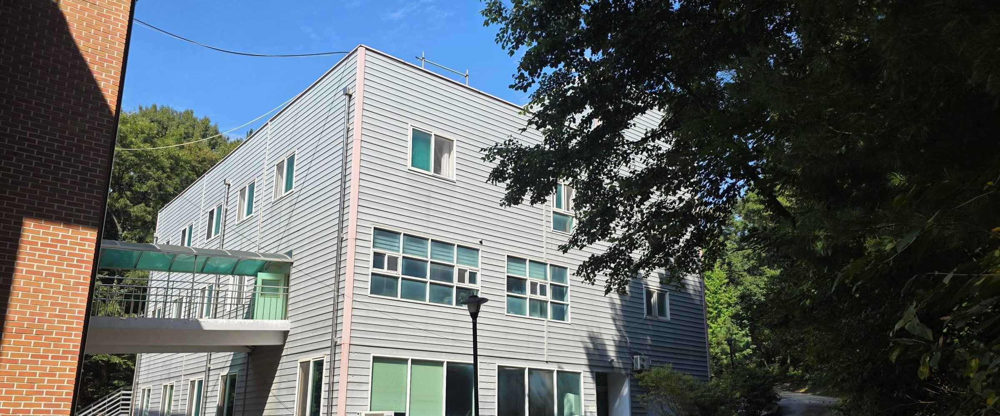

개인정보처리방침
폴앤다니엘기독학교는 입학 상담을 위해 최소한의 정보만 받습니다. 받은 정보를 어떻게 쓰고 언제 지우는지 아래와 같이 알려드립니다.
1. 수집하는 항목
홈페이지의 입학 상담 신청 양식에서 다음을 받습니다.
- 학부모 성함 (필수)
- 연락처 (필수)
- 자녀 학년 (필수)
- 이메일 주소 (선택)
- 문의 내용에 직접 적어 주신 사항 (선택)
자녀의 이름, 주민등록번호, 건강 정보 등은 홈페이지에서 받지 않습니다. 상담 과정에서 필요한 경우 별도로 안내드리고 동의를 받습니다.
2. 이용 목적
받은 정보는 입학 상담과 그에 따른 연락에만 사용합니다. 그 밖의 목적으로 쓰지 않으며, 광고나 홍보 문자 발송에도 사용하지 않습니다.
3. 보유 기간
상담이 끝난 날로부터 1년간 보관한 뒤 지체 없이 파기합니다. 그 전이라도 삭제를 요청하시면 바로 파기합니다.
전자 파일은 복구할 수 없는 방법으로 삭제하고, 종이에 출력한 것이 있으면 분쇄합니다.
4. 제3자 제공과 위탁
받은 정보를 외부에 제공하거나 다른 곳에 맡기지 않습니다. 법령에 따라 수사기관 등이 적법한 절차로 요구하는 경우에만 예외로 합니다.
5. 전달 방식에 대한 안내
이 홈페이지는 신청 내용을 저장하는 서버를 두지 않습니다. 상담 신청 버튼을 누르면 작성하신 내용이 담긴 메일이 열리고, 보내실지는 학부모님이 직접 결정하십니다. 보내지 않으시면 학교에는 아무것도 전달되지 않습니다.
받는 주소는 bcia_k@naver.com 이며, 메일은 학부모님의 메일 계정에서 직접 발송됩니다.
6. 열람 · 정정 · 삭제 요청
보내신 정보를 확인하거나 고치거나 지우고 싶으시면 아래로 연락 주십시오. 확인 후 지체 없이 처리하고 결과를 알려드립니다.
7. 처리 책임과 문의처
폴앤다니엘기독학교
충청남도 아산시 음봉면 아산온천로 148-39
전화 041-425-0085 · 평일 09:00 – 17:00
이 방침은 홈페이지 공개일부터 적용됩니다. 내용이 바뀌면 이 페이지에서 알려드립니다.